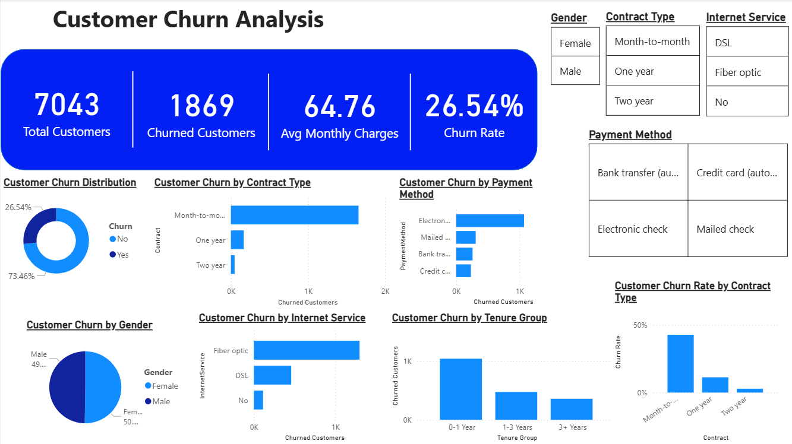

End-to-End Data Analytics Project by Rohit • Python | SQL | Power BI

Customers on month-to-month contracts experience a 42.7% churn rate, compared to under 3% for 2-year contract users.
Fiber optic internet users show significantly higher churn (41.9%) than DSL users (19.0%), indicating potential pricing or reliability concerns.
Offer a 10-15% discount or added value features for switching from Month-to-Month to annual contracts.
Promote automatic bank transfer/credit card payments over electronic check to lower churn associated with manual billing.